Official Releases
Introduction
The Official Releases page is dedicated to Sonic Jump and its different versions throughout history!
This page also contains external links to check reference sources, to watch videos and to visit official websites.
Additionally, since these versions of Sonic Jump are currently abandonwares, you can find game downloads via certain external links.
Disclaimers
Before learning the history of Sonic Jump, there are a few disclaimers to take into consideration.
First of all, it is important to note that this page does not mention the 2012 version released by by Hardlight (also known as Sonic Jump Pro).
Also, Sonic Jump Pro is not an abandonware, as this game is currently available to purchase on the Google Play Store.
Next, as it turns out, the J2ME version of Sonic Jump isn't just one version.
There are multiple versions of Sonic Jump, and this page is rectifying some incorrect information regarding the different versions of Sonic Jump.
With all that said, have a good read!
Sonic Jump in general
Sonic Jump is a is a vertical-platformer mobile phone game in the Sonic the Hedgehog series.
You take control of Sonic in vertical stages while jumping from platform to platform, collecting rings and defeating badniks.
The goal is to reach the top of the stage, with Dr. Eggman sometimes waiting on top.
Some versions of Sonic Jump contain story cutscenes about Dr. Eggman wanting to take over the world by gathering the Chaos Emeralds.
Tails and Knuckles are present in the cutscenes and only serve for story progression.
2005 Versions
Description
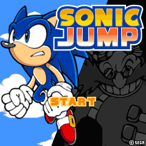
Sonic Jump started off as a mobile phone game released back in February 21st 2005.
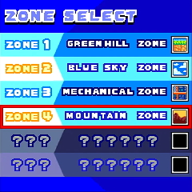
Unlike what most players know, the original 2005 versions of Sonic Jump only contain 6 stages representing by the zone name.
Gameplay
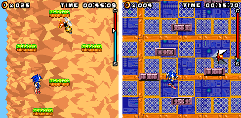
Gameplay wise, there are a few differences.
There are no checkpoints and no life counter, so anytime you lose, you have to replay the whole stage again.
In terms of controls, the only difference is that instead of the double jump, Sonic can perform a Super Jump to jump higher.
To perform this ability, hold down the center key (or [5] on the numpad) and wait for Sonic to land and jump.
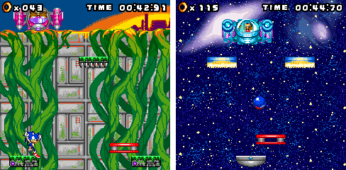
At the end of each stage is Dr. Eggman on his machine.
You have to hit Dr. Eggman's machine 6 times to defeat him (10 times in Cosmic Zone).
Japanese versions

In Japan, Sonic Jump was first released via the Sonic Cafe mobile service.
It was released for i-mode 505i in 2005, Vodafone Live! (256KB) in 2006 and EZweb (BREW 3.1) devices in early 2007 through the Sonic Cafe website.
The original game released for DoJa phones (i-mode and Vodafone Live!) was created by Sonic Team.
The J2ME version was created by Genplay and made its way to other regions.

On the i-mode version, there are sound effects during cutscenes, such as text displaying and when the phone rings or beeps during the first cutscene.
Other regions
The 2005 version of Sonic Jump (specifically the J2ME version) made its way to other regions via different mobile services.
SEGA MOBILE VERSION:
First, Sonic Jump was released in the U.S.A. via the SEGA Mobile service on April 30th 2007.
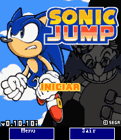
TECTOY MOBILE VERSION:
Then, on that same year, Sonic Jump was released in Brazil via the Tectoy Mobile service.
This version has some text translated into Portuguese.
Only beta versions (v0.10.10) of this game has been currently archived, which do not contain cutscenes.
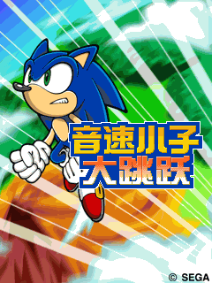
CHINESE VERSIONS:
In China, Sonic Jump was released multiple times by different mobile services between 2009 and 2010.
All versions released by the mobile services used the same title screen used in the AirPlay version of Sonic Jump.
SOUTH KOREAN VERSION:
Finally, there is a Korean version of Sonic Jump.
It hasn't been archived yet, and information about the mobile service and release date are currently unknown.
External Links
AirPlay Versions
Description
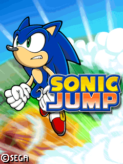
In 2007, Sonic Jump got a sequel/remake by the same name (also known as Sonic Jump 2 in some regions) created by AirPlay.
These are the versions that most players remember, as it was released on many phones of its time.
The AirPlay versions introduce new gameplay mechanics and other features from the 2005 versions.
New features
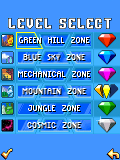
MORE STAGES:
The AirPlay versions feature a grand total of 21 stages indicated by zone names and act numbers.
Each zone has 3 acts.
EMERALD SHARDS:
Additionally, these versions introduce Emerald Shards.
If you clear a stage with at least 50 rings, you will earn a shard.
Collect all Emerald Shards in the game to unlock the brand-new Bonus Zone and end the story.
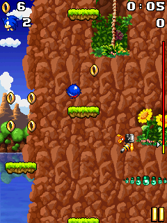
GAMEPLAY:
Gameplay wise, the Super Jump ability has been replaced by a simple double jump.
Press the center key or [5] on the numpad to perform a small extra jump during a regular jump.
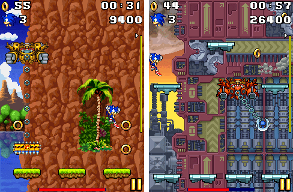
Next, the checkpoints are present, and there is a life counter.
And the goal of each stage is to reach the top of the stage.
Act 3 stages still have Dr. Eggman machines to destory to end the stage.
Glu Mobile
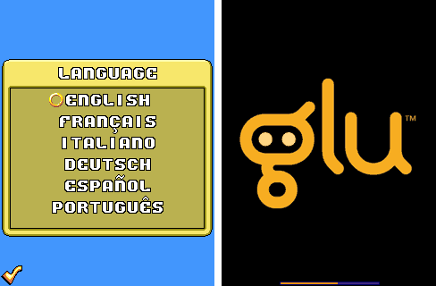
The AirPlay versions of Sonic Jump was first published in Europe by Glu Mobile.
These versions are the first-ever release of Sonic Jump in Europe.
The AirPlay versions come in 6 different languages: English, French, Italian, German, Spanish and Portuguese.
Versions with English-only also exist.
Sonic Jump 2
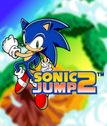
On May 2008, versions of Sonic Jump was released under the name Sonic Jump 2.
Despite the name, it contains no significant differences between it and the other AirPlay versions.
Sonic Jump 2 released via the SEGA Mobile service in the U.S.A, and by Tectoy Mobile in Brazil.
The version released by Tectoy Mobile comes with 2 languages: Portuguese and Spanish.
Ruansky version
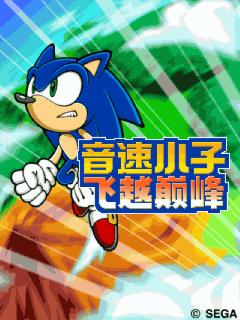
A Chinese mobile service named Ruansky released an AirPlay version of Sonic Jump in China.
The Ruansky version was a one stage free-trial vesion by default.
The full game is meant to be unlocked after paying a fee.
The name "Sonic Jump" is named differently compared to the 2005 versions released by other Chinese mobile services.
SEGA versions
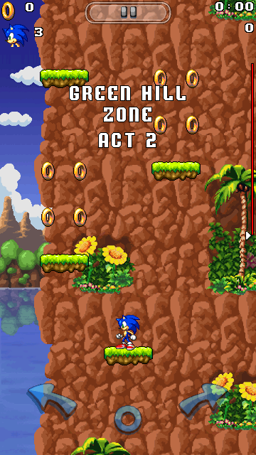
In Australia, the AirPlay version of Sonic Jump was released in 2010 by SEGA.
Additionally, SEGA also released a 360x640 version with touchscreen controls, which features a virtual pad to control Sonic.
External Links
Japanese/Chinese Android port
Description
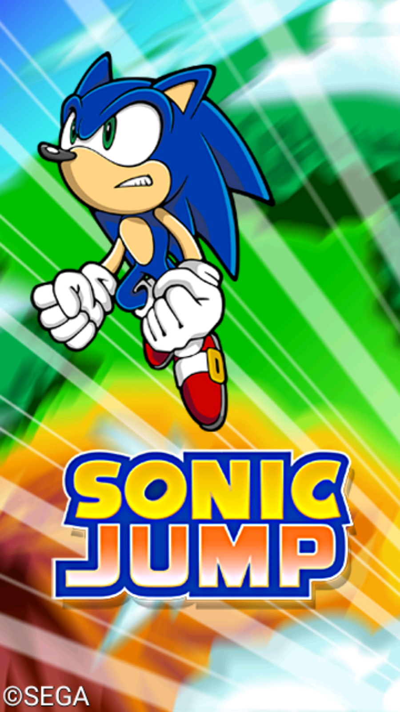
Exclusively in Japan, the AirPlay version of Sonic Jump was released on Android via the Puyo Puyo! Sega mobile service on April 25th 2011.
The Android port is the only version based on the AirPlay version released in Japan.
This Android port has a crash issue on Android 8.0 or higher when starting a stage.
The reason for this bug is due to a line of code, presumably unsupported for recent Android versions.
New features
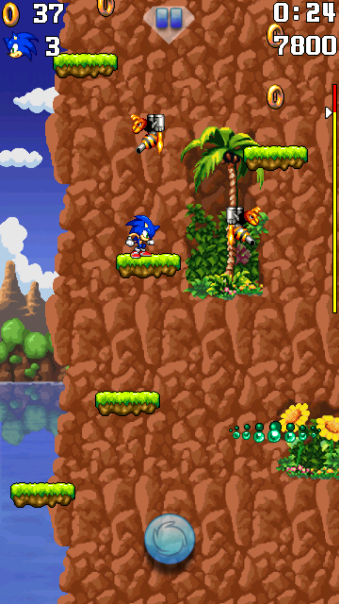
The Android port features gyroscope controls.
You can move Sonic left or right by tilting your device.
But you can also use the virtual pad, similar to the one found on the 360x640 J2ME version.
Also, the sound effects can be played at the same time as the music.
However, some music and sound effects are poor-quality.
Chinese version (Lost media)
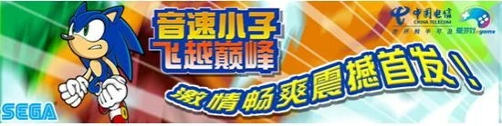
A Chinese version of the Android version was released by eGame on September 30th 2011.
It has a few differences in terms of graphics, resemblig more the J2ME AirPlay version released by SEGA.
However, this version is currently lost media.
External Links
Pleasant Goat Jump
Description
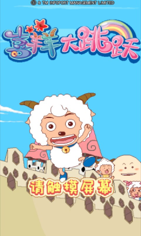
A Chinese exclusive game named "喜羊羊大跳跃" (also known as "Pleasant Goat Jump" or "Weslie Jump") was released on Android and J2ME phones on October 2011.
It was also released on the Microsoft Store for Windows Phones on March 31st 2012.
It was created by SEGA to distributing mobile applications on Mobage (a Chinese mobile service).
On the Android version, the game initially requires payment to unlock subsequent content after completing the first stage of the game.
Gameplay
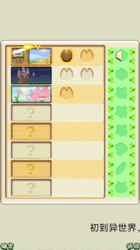
The game consists of 16 stages (2 acts in 8 zones).
Like in the AirPlay version of Sonic Jump, you can clear the stage with at least 50 collectables to earn an item piece.
Get all item pieces to unlock the last zone and end the story.
On the Android and Windows Phone versions, you can tilt your device or use the virtual pad to move the character.
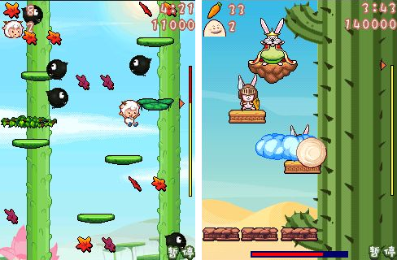
Like Sonic Jump, the goal is to reach the top of the stage (some stages contains a boss battle at the end) by jumping on platforms.
But unlike Sonic Jump, Pleasant Goat Jump features unique gameplay mechanics to set the game apart.
Unique features
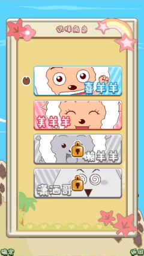
CHARACTER SELECT MENU:
The first unique feature of Pleasant Goat Jump is the character select menu.
You can unlock characters the more you clear stages.
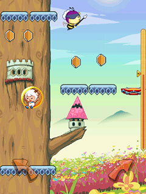
POWER-UP:
In each stage is a power-up item.
This item allows you to become invincible and gives you a special ability for a short period of time.
Each character has their own special ability, such as jumping higher or collecting nearby collectables.
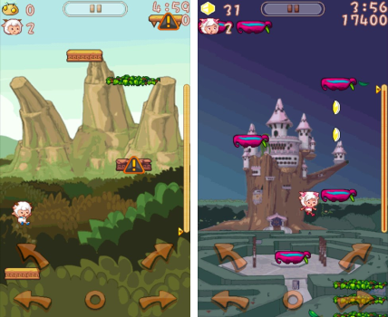
CONTROLS:
On the Android and Windows Phone versions, the virtual pad has 2 additional arrow buttons on top of the usual arrows.
The upper arrow buttons allow you to move the character left or right and perform a double jump at the same time.
COMBO SYSTEM:
The point system works just like in the AirPlay version of Sonic Jump, but with a combo system.
Collect items or defeat enemies in quick successions to increase the combo multiplier.
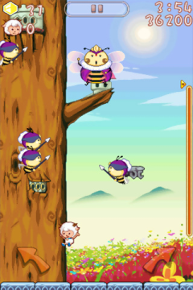
BOSS BATTLES:
The bosses in Pleasant Goat Jump give players a tougher challenge.
Most of the bosses are unique in their own way and require different tactics to defeat them.
External Links